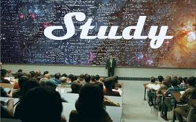
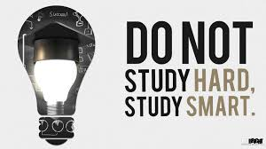

The Cheat Sheet
WELCOME!
The cheat sheet is your exam 101 to help you with your exam study habits.
This site will either change your study techniques completely, or perhaps improve them!
I personally think that everyone can learn a thing or two about studying not harder, but smarter! Different people study differently but in what way? Well, lets find out...
This involves writing down all your study material and memorising what you have written down. Its a neat way of acquiring all the important informaton, and basing your knowledge off of that. In my opinion, this is the best way to study because when you are writing everything you need to memorise, it's almost as if you are saying it multiple times. Rewriting important information helps with memorisation!This is a good study method, but it can get tiresome!
This study method involves verbal practice. This usually means that people will constantly say their study notes out loud in the hopes that it will stick with them. Usually people continuously repeat what they have a hard time remembering. It is overall a good study method,however many of these people actually forget alot of the material after a while. This can be a huge disadvantage as you are constantly being tested with both old and new material. Sometimes, some people successfully remeber the material after the exam.
This involves actually seeing what you have to learn. Usually these people watch videos and look at diagrams/flow charts in order to understand something. They have to see something and not just read about it to understand it. This studying method has never worked for me but works for alot of people I know. These people are usually good with flow charts and understanding and remembering drwaings and diagrams.